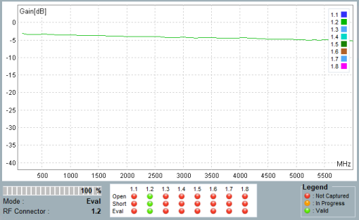

Measurement Results
The "Pathloss" tab shows the measurement results. You can switch between a result diagram and a result table.
For a detailed description of the result views, see "Measurement Results". The following provides an overview.
The diagram shows the gain vs. the frequency, per connector.
Below the result diagram, the most important settings and states are listed.

Result diagram, important settings and states
The table shows the gain per configured frequency list entry.

Result table